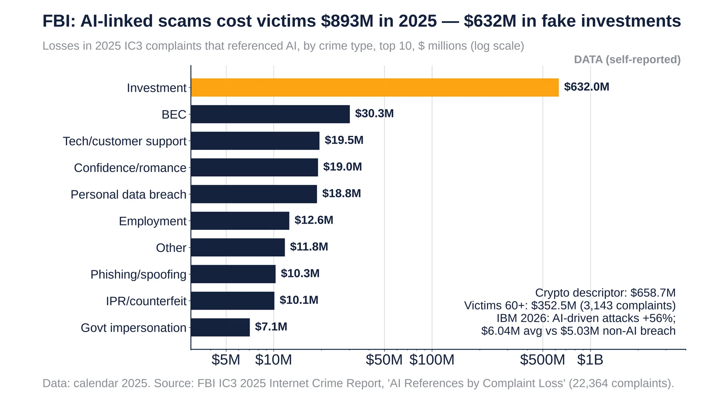

Q4. AI-Enabled Attacks
Weekly Focus graphs, started Oct 25, 2026: new charts are added each week from primary or clearly named secondary data. Each caption names its sources and its caveats.

2025 IC3 complaints referencing AI: $893M losses, top 10 crime types (log scale). Source: FBI IC3 2025.
- 2025: 22,364 complaints referenced AI, with $893.3M in adjusted losses.
- Investment scams with an AI link accounted for $632.0M, BEC $30.3M, tech support $19.5M, romance $19.0M and employment $12.6M.
- IBM 2026: AI-driven attacks rose 56%, and AI-driven malicious breaches averaged $6.04M vs $5.03M for non-AI ones.
Sources: FBI IC3 2025 Internet Crime Report (PDF) IBM Cost of a Data Breach report